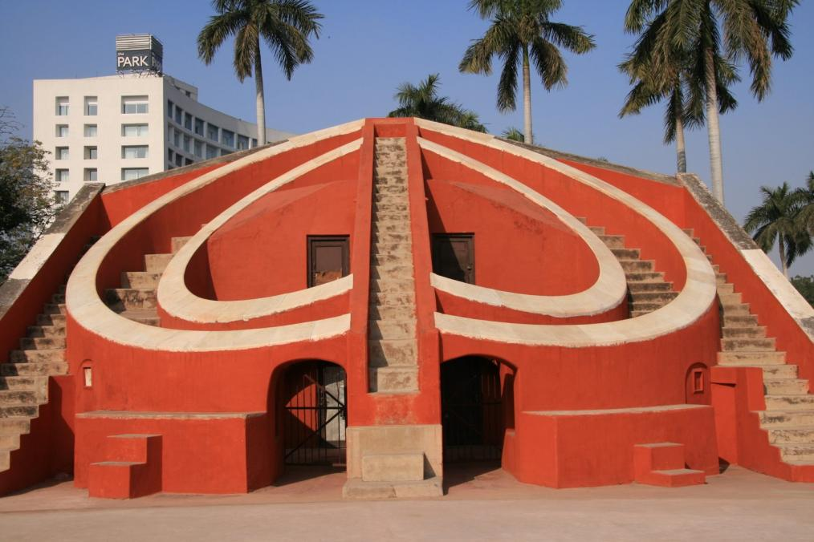

Jantar Mantar

Jantar Mantar is a heritage site that holds many astronomical instruments of yesteryear that are still in use. There are five Jantar Mantar monuments in the country, which were constructed by Maharaja Jai Singh of Jaipur.
The equipment in the observatory is used for predicting the location, distance and speed of heavenly bodies, movement of sun and others.
Tourist Attractions in Jantar Mantar
1.)Jantar Mantar of New Delhi holds 13 astronomical structures that were built from 18th century. Top instruments to spot in Jantar Mantar are :
2.)Samrat Yantra – A large hour sundial that stands parallel to the axis of Earth. It is a high precision sundial. Climb up the stairs to check the time in the sundial.
3.)Jayaprakash Yantra – This is a hemisphere like structure, which is used for aligning position of stars to various markings.
4.)Misra Yantra – This tool helps to determine the longest and shortest days of the year. It also indicates the right moment of noon.
Although the accuracy of reading is questionable, the astronomical structures are astonishing as they were made many centuries ago using brick, limestone and plaster.
How to Reach Jantar Mantar
The observatory is located in the center of the city. You can easily find buses, trains, rickshaws and autos from any part of the city to Jantar Mantar. If you are staying in a high-end hotel, you can find pre-paid car services too.
The nearest railway station is located in Rajiv Chowk and Patel Chowk. Get down at the Rajiv Chowk metro station Gate 6 and hire auto or taxi to reach the monument. It is 2 km away from the observatory. If choosing Patel Chowk station, the observatory is at walking distance from the station.
The observatory is located in Connaught Place which is a common landmark in Delhi. Thus, you can easily reach the observatory from any part of the city. The observatory is 2.5 km away from New Delhi railway station.
You can hire buses from any part of the city to Palika Kendra bus stand, which is very close to the entry gate of the observatory.
Best Time to Visit Jantar Mantar
The observatory is at prime beauty throughout the year. Tourists are allowed to use the equipment to watch the heavenly bodies. Thus, choose clear days of summer or winter.
Cloudy and rainy days can hinder the view. Moreover, visiting in the morning will help you explore the place in slow pace
Best Time to Visit Jantar Mantar
The observatory is open to public from 10 in the morning to 6 in the evening. It takes around 45 minutes to explore the whole place.
Indian citizens are charged INR 15 per head. Children under the age of 15 are free to enter. Tourists are allowed to use camera without any charge. Video cameras are charged INR 25 per camera. Foreigners are charged INR 150 per head.